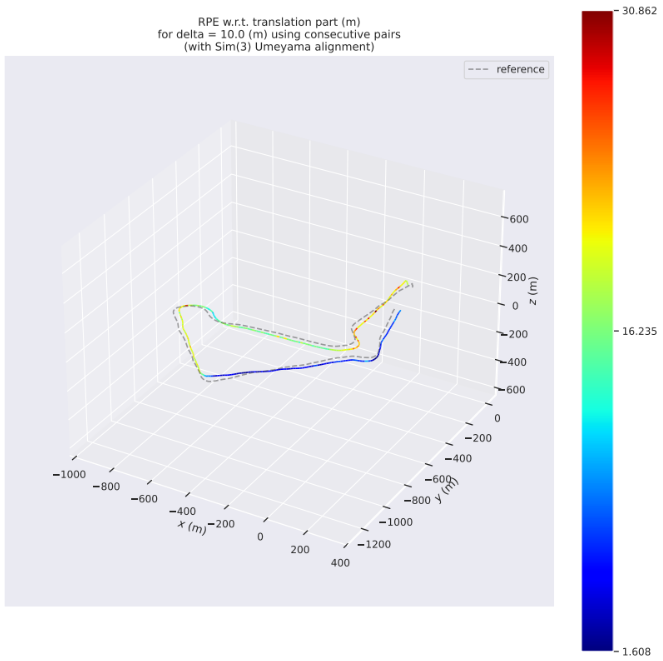
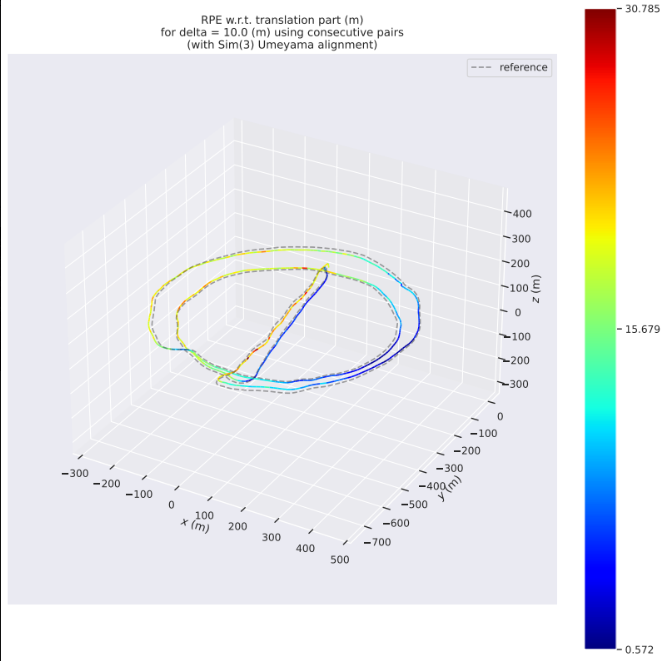

GNSS-Denied UAV Localization — VTOL Aviation India Pvt. Ltd.
Visual and visual-inertial localization for UAVs operating without GPS. Evaluated multiple state-of-the-art SLAM/VIO pipelines on indoor camera-IMU data, then validated the selected approach outdoors — ORB-SLAM3 in mono-only mode achieved a 15 m mean error against ground truth, tested across two distinct outdoor trajectories.
Indoor Algorithm Evaluation
Custom camera-IMU setup, compared across three pipelines
ORB-SLAM3 (mono-IMU)
OKVIS2-X (mono-IMU)
DM-VIO (mono-only)
Outdoor Validation
ORB-SLAM3, mono-only, downward-facing camera on VTOL — 15 m mean error vs. ground truth (Sim(3) Umeyama alignment)
Straight-line trajectory with turns
Trajectory alignment (RPE vs. ground truth)

Circular trajectory — 2 laps + return-to-launch
Trajectory alignment (RPE vs. ground truth)
